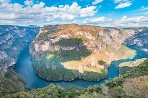
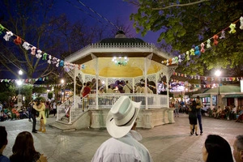
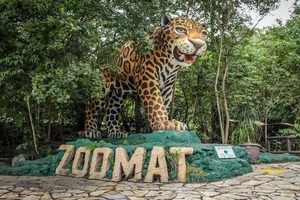
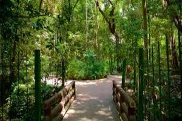
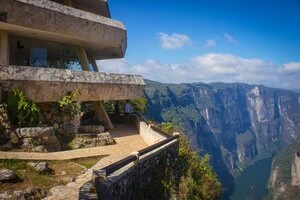
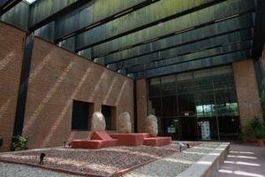

Sumidero Canyon

Explore breathtaking cliffs and a winding river on a boat tour.

Explore breathtaking cliffs and a winding river on a boat tour.

A lively public park featuring marimba music performances daily.

ZooMAT in Tuxtla Gutiérrez is a unique zoo showcasing Chiapas’ wildlife in a natural habitat.
A gigantic statue of Christ with spectacular views of the city, located on Mactumactza Hill.

A quiet place with a great variety of local flora and ancient trees. Ideal for walking and learning about the biodiversity of Chiapas.
A beautiful temple with a tower with a carillon that rings every hour. Its architecture is an icon of the city.

Five viewpoints (La Ceiba, La Coyota, El Roblar, El Tepehuaje and Los Chiapa) offer impressive views of the Canyon from above.

It exhibits archaeological pieces from pre-Hispanic cultures such as the Mayans and Zoques, as well as exhibitions on the history of Chiapas.